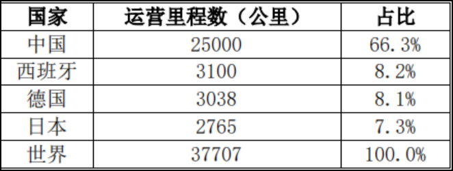
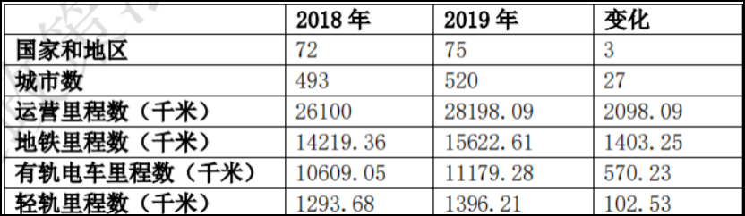

全球城际高速铁路和城市轨道交通仍处于持续扩张的发展阶段，而中国在这两个领域的建设都具有明显的领先优势。
截至 2018 年， 全球高铁运营里程约 3.8 万公里，其中，中国高铁运营里程为 2.5 万 公里，占全球高铁总量的 66.3%，远高于世界其他国家。其次为西班 牙，其高铁运营里程数为 3100 公里，然后是德国和日本，其高铁运营里程数分别为 3038 公里和 2765 公里。据《都市快轨交通》期刊上的数据显示，截至 2019 年底，全球 共有 75 个国家和地区的 520 座城市开通了 28198.09 千米运营里程 的城市轨道交通，较 2018 年时扩展了 3 个国家和地区、27 座城市， 增加了 2098.09 千米的运营里程。
各国对交通基础设施建设主要是通过投资的方式进行，同时也积极通过政府和社会资本合作的方式进行相关融资。
2018年全球高铁运营历里程数
城市轨道交通建设状况
